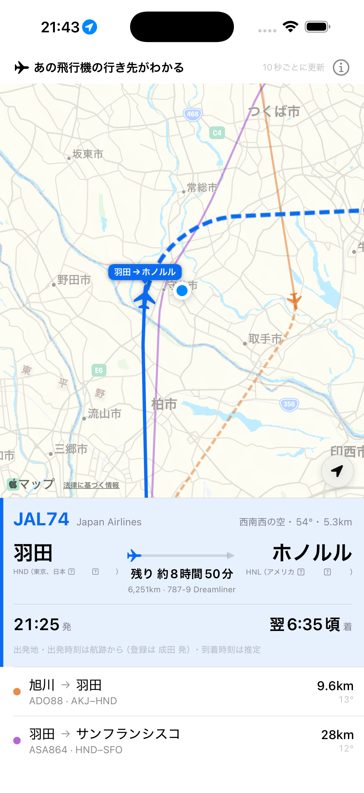
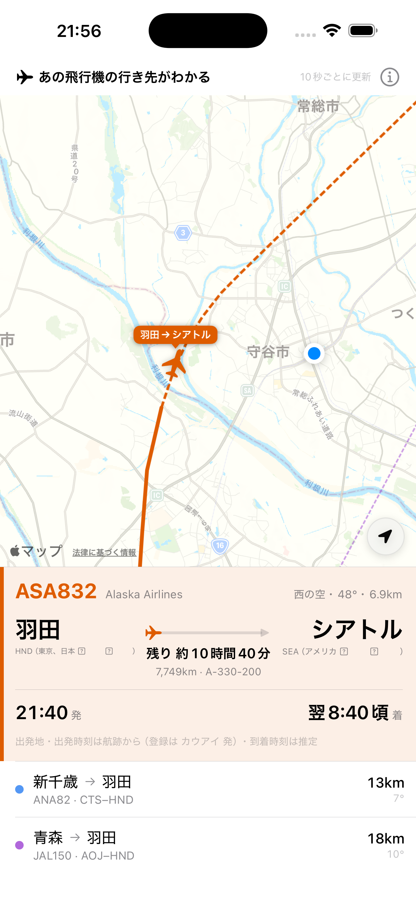
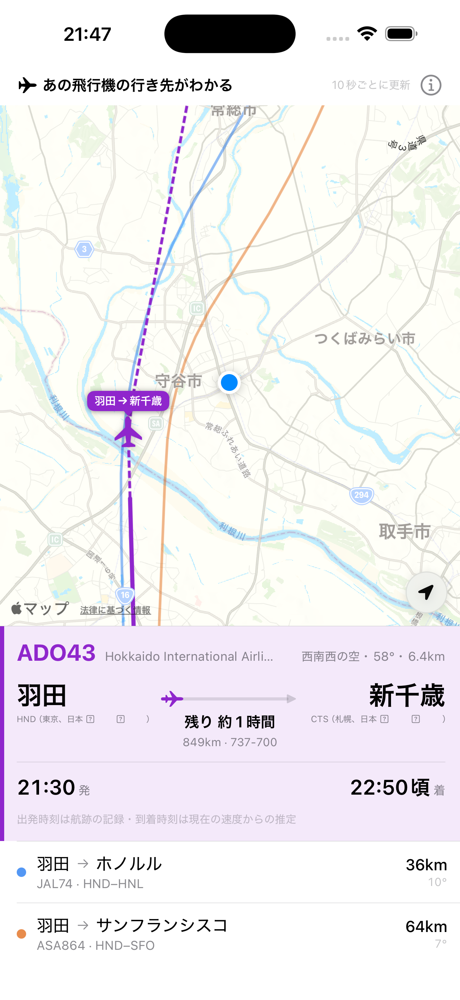

iPhone App — 8ight Apps
上空に見えるあの飛行機は、どこへ行くのか。起動すると、いま見えている飛行機が近い順に3機ならび、それぞれの出発地と行き先が地図でわかります。
App Store でダウンロード iPhone・iOS 18.0 以降 ／ 無料


上空を飛ぶ機体の情報は、世界各地の個人が自宅に設置した受信機が拾った電波から届いています。
本アプリは娯楽目的です。運航、航法、衝突回避その他の重要な用途には使用しないでください。表示されるデータの正確性はデータ提供者に依存します。本アプリは上記のデータ提供元とは無関係の独立したアプリです。
アプリについてのご質問・ご要望は、snow0325@gmail.com までご連絡ください。